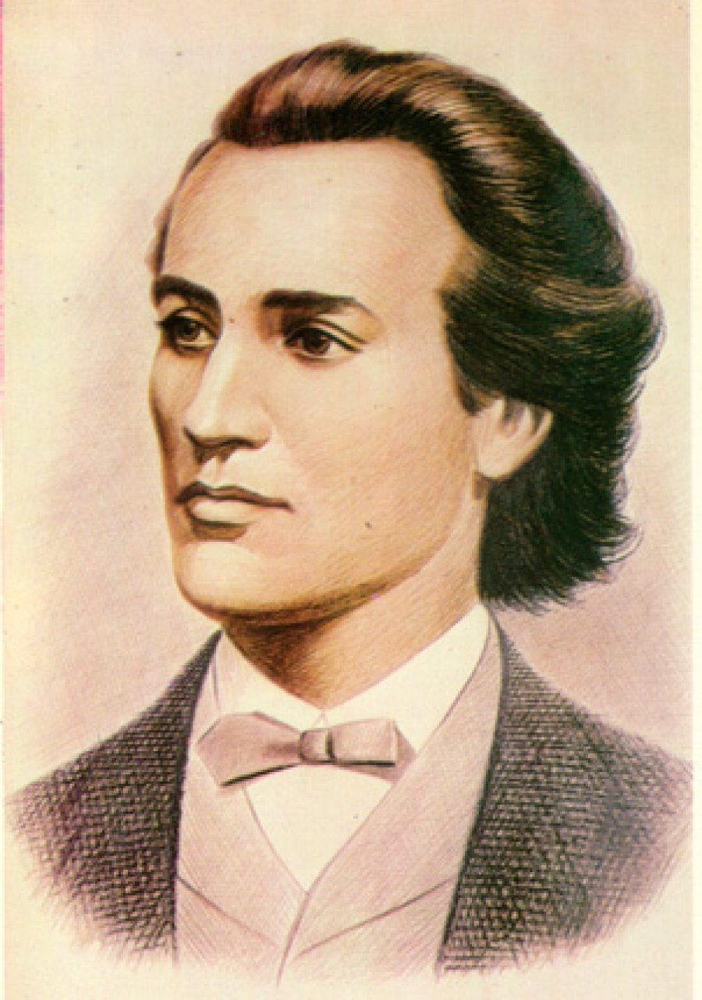
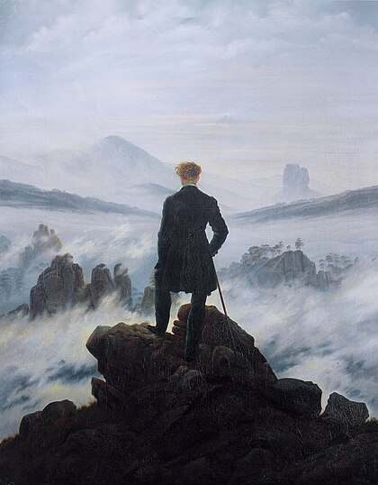
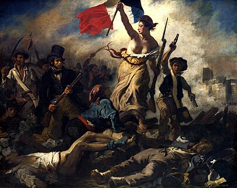
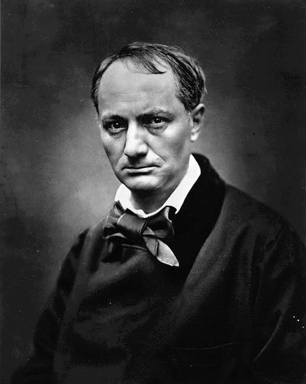
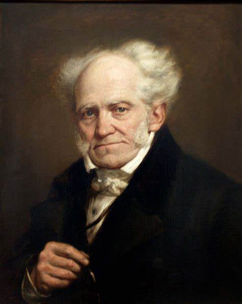
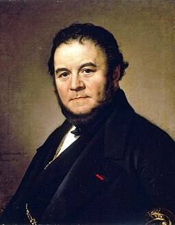
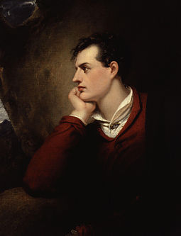

Galerie Foto

Mihai Eminescu

Caspar David Friedrich Der Wanderer über dem Nebelmeer, 1818 (Hoinarul deasupra mării de ceață)

Libertatea conducând poporul, Eugène Delacroix

Charles Baudelaire

Arthur Schopenhauer

Stendhal

Victor Hugo

Georges Gordon Byron